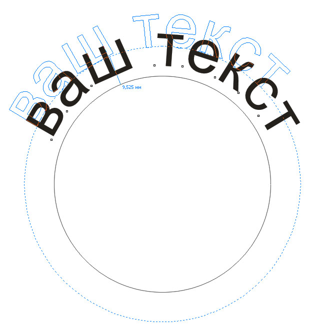

Текст вдоль кривой. Практический совет
sergey / 14.05.2011, 16:23/00:41
Форум:
Это, скорее, не урок, а практический совет.
Расчитан на новичков!
Бывалым — 

После постановки на путь возможно редактирование.
Достаточно взять текст и поместить его в желаемом положении.

Можно подредактировать текст в режиме Форма

Нужен текст, который пойдёт в другом направлении.
Для этого необходимо отразить его по горизонтали, а затем по вертикали
и применить к пути


Задать направления текста можно и после применения к пути

После того, как желаемый результат достигнут можно отделить путь и удалить,
чтоб случайно не сдвинуть текст, или задать ему нулевой абрис.


После отделения текста можно вернуть его в первоначальное состояние
Всем удачи и творческих успехов!
Это всё конечно круто, вот только никак не могу найти - как поместить текст вдоль окружности, но изнутри? Хэлп ми сам бади, плиз.
А нет, всё нормально. Сам разобрался.
В CorelDRAW X6 при редактирование текста помещенного вдоль кривой происходит ломание текста, но убирая редактирование текст становиться на место. Проблема в том, что не видно как редактировать его.
1. выделить ТЕКСТ (не текст по кривой, а именно текст - CTRL+click) и далее
CTRL+SHIFT+T
2. выбрать инструмент Text tool (F8) и щелкнуть по тексту на кривой - появится курсор - редактируйте
1. выделить ТЕКСТ (не текст по кривой, а именно текст - CTRL+click) и далее
CTRL+SHIFT+T ----- получаеться редактировать, но со смещением. (фото 1)
2. выбрать инструмент Text tool (F8) и щелкнуть по тексту на кривой - появится курсор - редактируйте ------ не получаеться все равно ломает (фото 2)
Может проблемы с файлом??? Могу прислать файл.
А какие изменения вносите? Длина текста при этом уменьшается или увеличивается?
Можете "поиграть" размером, межбуквенным интервалом, отступом?
kcahka1603, у Вас текст был разъединён с кривой. Поэтому так получается.
Изменила часть текста. Длина чуть уменьшилась. Проблема случилась при добавлении к тексту контура. Убираю контур все работает - редактируеться нормально.
Может в этом проблема?
Хотя в новом документе пробую пустить текст по кривой с контуром все нормально работает. Даже не знаю в чем проблема.
Нет текст не был разьединен - проверяла и этот вариант.
хм ... становится интересно ...
а можно файл в студию? А также какие изменения требуется внести ...
Страницы